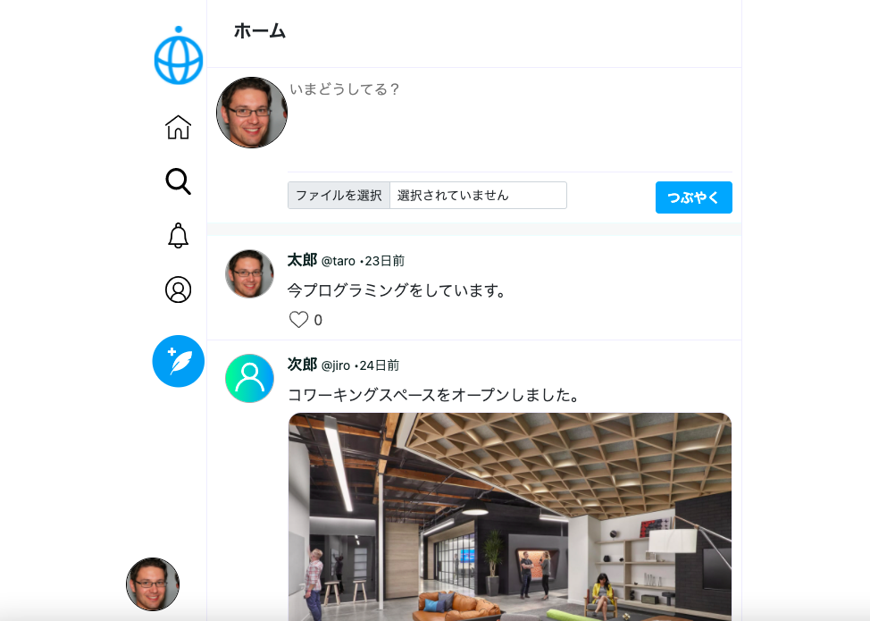
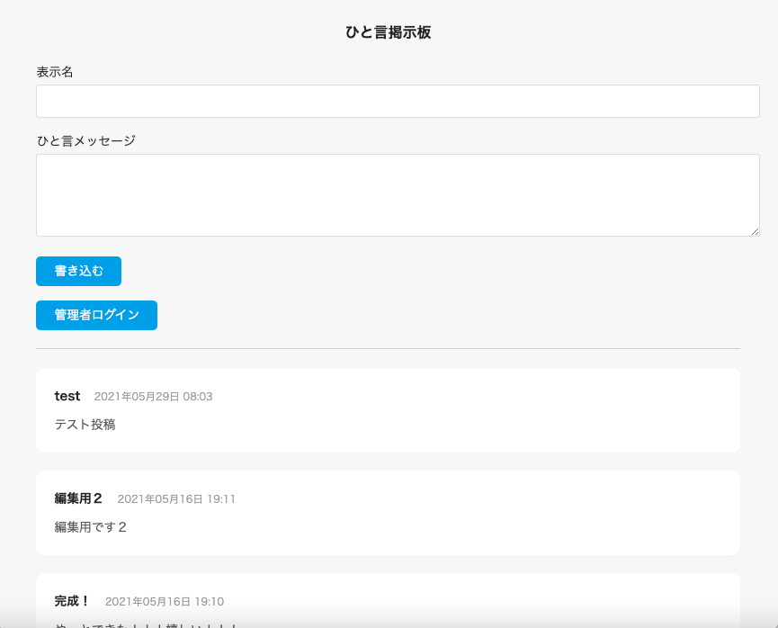

Okuda Tsukasa
奥田 吏
---About---
HTML / CSS / JavaScript / PHP / MySQL / Larabel
ここに自己紹介を書きます。ここに自己紹介を書きます。
e.v.alio3o.t@gmail.com
---Projects---
-

Twitterクローン
Twitterの複製サイトです。ツイートを投稿できます。
HTML/ CSS/ PHP/ MySQL -

ひと言掲示板
投稿サービスです。管理者ページから編集・削除も可能です。
HTML/ CSS/ PHP / JavaScript/ MySQL